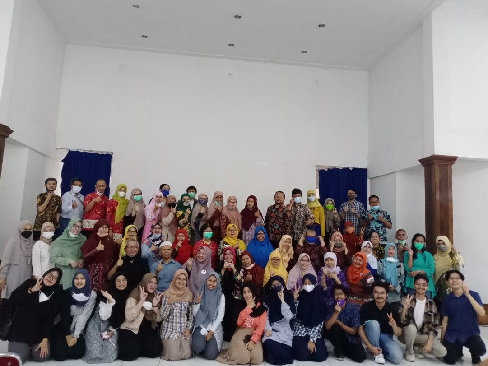

Info

Saya mahasiswa aktif jurusan Ilmu Komputer di Institut Pertanian Bogor. Aktif
mengikuti beberapa kepanitian, organisasi dan beberapa kegiatan kampus. Tertarik dengan
teknologi informasi, kesehatan mental, dan bisnis intelejen. Saya juga suka mengeksplor hal baru,
mudah bekerja sama dengan orang lain, pribadi yang mandiri, bertanggung jawab dan memiliki
jiwa kepemimpinan.
Pengalaman

Konselor Sebaya
Staf Divisi Media dan Branding (September 2021 – Desember 2022)
● Membuat desain dari konten story mingguan
● Membuat desain dari konten bulanan yang dijadwalkan tim event dan content
● Memberikan layanan konseling baik secara offline maupun online
PMB IPB
Co-Fasilitator (Mei – Desember 2022)
● Menjadi pusat informasi dari stakeholders ke mahasiswa baru
● Mendampingi mahasiswa dalam memvisualisasi tugas
● Membantu fasilitator menilai penugasan dan menyusun rekapitulasi nilai mahasiswa baru
CPSC
Bendahara (April – Oktober 2022)
● Mengurus keuangan secara umum
● Menyusun rancangan biaya anggaran dan laporan keuangan selama satu periode kepanitiaan.
Asrama Kepemimpinan & Kader Pejuang Pertanian
Anggota (September 2021 – Oktober 2022)
● Melakukan kegiatan sesuai dengan agenda mingguan maupun agenda dari ditmawa
IKADA Bogor
Bendahara Umum (Februari 2021 – Februari 2022)
● Mengurus keuangan secara umum
● Membuat rancangan biaya anggaran dan laporan keuangan selama satu periode kepengurusan
● Memastikan setiap divisi terkoordinasi dengan baik dan membantu menguatkan internalisasi
Skill
Hard Skill
● Python
● R
● SQL
● Data Analytics
● Big Data Processing
● English - Intermediate
Soft Skill
● Leadership
● Teamwork
● Emphaty
● Problem Solving